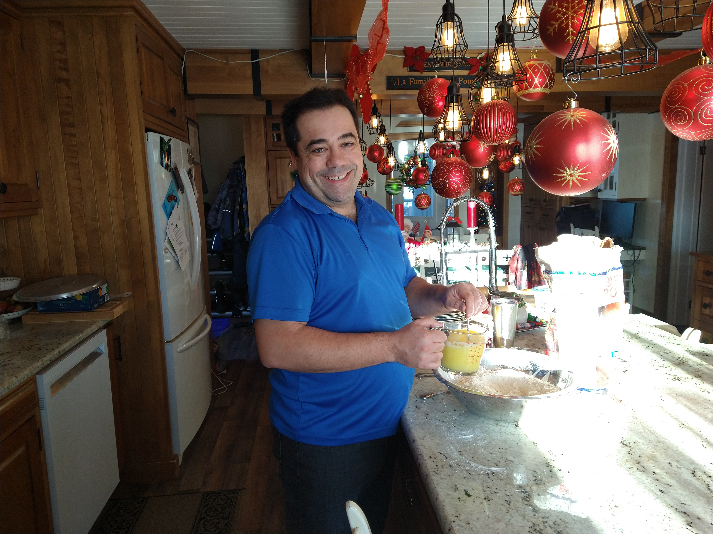
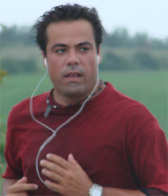
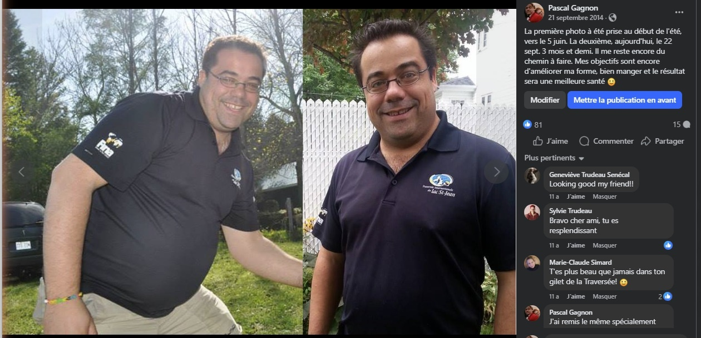
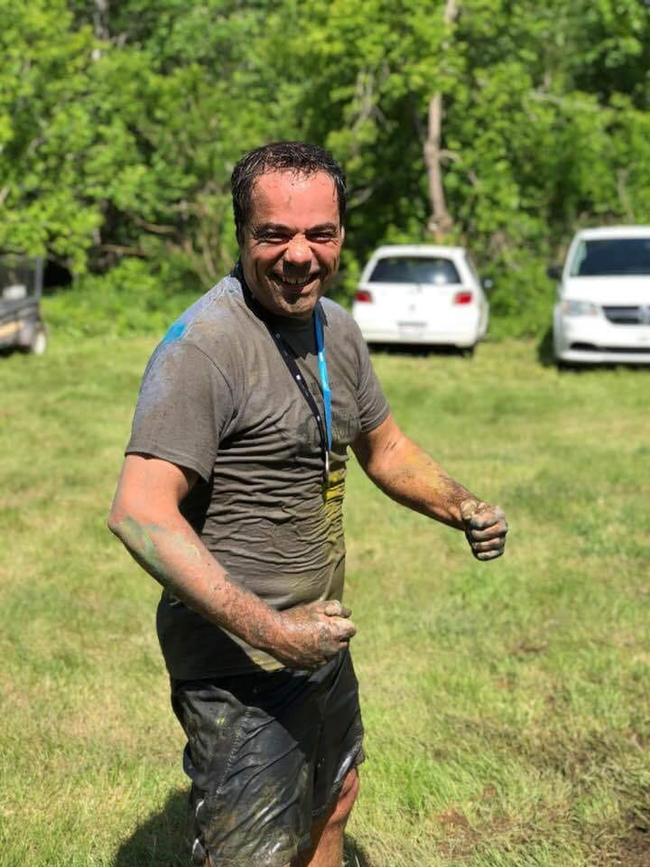
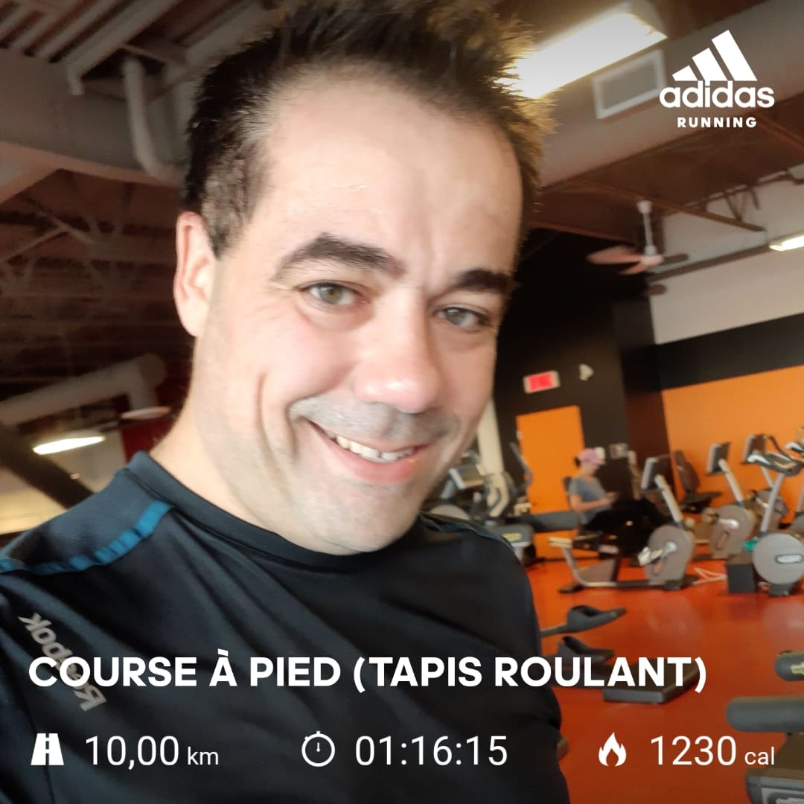
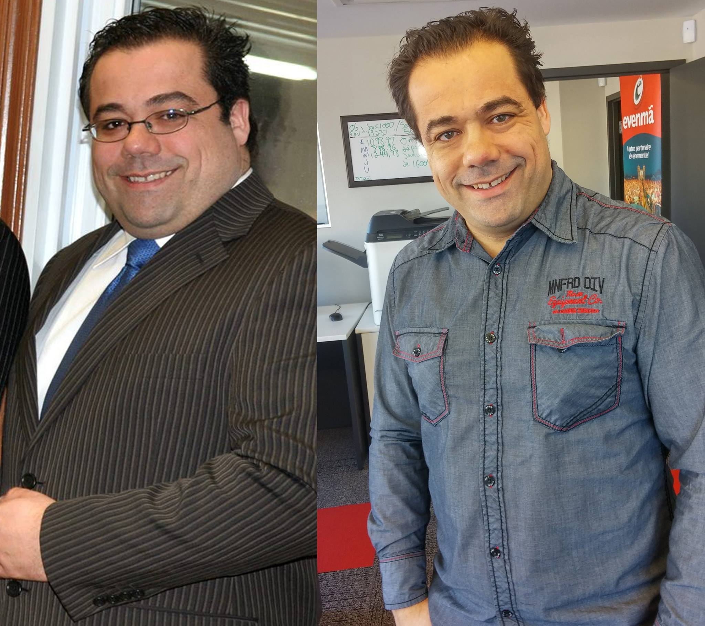

TL;DR — Ce que tu vas avoir
- 2 protocoles simples : le Rapide et le Croisière
- Comprendre pourquoi ça fonctionne — pas juste des règles à suivre
- Comment recommencer sans repartir à zéro quand la vie déraille
- Écrit par un gars de 50 ans qui l'a fait plusieurs fois — pas un gourou
Un PDF · Deux protocoles · Zéro bullshit
Je veux la Méthode ResetLivraison instantanée. Tu commences ce soir si tu veux.
Tu l'as déjà fait. Tu le sais. Ça marche.
Puis la vie a changé.
Une nouvelle relation. Une famille recomposée. Un boulot qui mange tout. Les habitudes que tu avais mis des années à calibrer — ce que tu mangeais, ce que tu ne mangeais pas, quand tu bougeais — ont glissé une par une.
Le poids est revenu. Pas catastrophiquement. Juste... tranquillement. Comme ça arrive.


La même personne. Des années différentes. C'est ça, la vraie vie.
Les autres guides promettent
« Tu ne reprendras plus jamais de poids. »
Ce que moi je promets
« Tu ne paniqueras plus jamais quand ça arrive. »
Sans gym. Sans compter les calories. Sans réorganiser ma vie.
Écrit pendant que je repassais des rideaux un samedi matin.
Un PDF · Deux protocoles · Zéro bullshit
Je veux la Méthode ResetOn dirait que je suis en train de lire un roman, tu peux juste me l'envoyer?
Oui, livraison instantanée.
Le tournevis
Tu tiens un tournevis dans ta main.
Tu sais ce que c'est. Tu l'as utilisé mille fois. Le mot ne vient pas.
La première fois, je me suis donné des excuses. Le premier mois pareil. Mais à un moment donné, il a bien fallu me rendre compte que je n'étais pas capable de nommer la boîte de mouchoirs que j'avais au bout de la table. Des mots simples, dans mon champ de vision.
Pas le nom de l'espèce d'oiseau dans une niche d'arbre aux îles Galapagos — non. Le mot crayon que je voulais pour ma liste d'épicerie.
Mon beau-père fait de l'Alzheimer.
Toi, est-ce que tu paniquerais autant que moi?
Mon histoire — en photos
J'ai eu 270 livres en novembre 2006. J'ai couru un 30 km en août 2007. J'avais gagné.
Puis c'est recommencé. Repris en 2011, perdu en 2015-2016. La vie m'a malmené, changé, j'ai changé de vie amoureuse, déménagé, appris de nouveaux métiers.
Regarde l'album.

~2013 — En forme, en train de courir

Sept. 2014 — 3 mois de travail, 81 likes sur Facebook

~2018 — Course d'obstacles dans la boue. Sourire.

2019 — Gym, tapis roulant, 10 km
La photo qu'on préfère ne pas voir

La même recette. Ça refonctionne.
La photo avant et après, tu l'as vue. Tu l'as même mise en ligne, toi aussi. Et là, tu es après la photo après... genre un peu comme la photo avant.
Mon frère perd régulièrement du poids — ou non — en tout cas, c'est toujours impressionnant et il nous en parle beaucoup. Il m'a mis ici comme témoignage à mon insu, parce qu'il sait que je vais trouver ça drôle de me trouver ici. Je n'ai jamais suivi ses trucs, je n'ai pas de problèmes de poids, mais je vous garantis qu'il sait comment en perdre et recommencer encore!
— Joël Gagnon, frère de Pascal (et fondateur d'Éditions Randolph)
Ce que tu vas apprendre
Pourquoi ton corps accumule même quand tu manges "bien"
Ton corps ne pense pas, il agit. Il traite les aliments exactement comme ton ancêtre dans la savane le faisait. La volonté, c'est quoi ça de toute manière? Est-ce que tu penses que si tu fais de la méditation, tes cellules de gras vont fonctionner autrement? Est-ce que tu penses changer des millions d'années d'évolution pour survivre une famine qui n'arrive jamais?
Le Protocole Rapide
Pour perdre 10 à 15 livres en 2 à 4 semaines quand tu as besoin de résultats vite — avant le voyage, le mariage, l'événement. C'est ça que j'ai utilisé. 12 livres en 18 jours.
Le Protocole Croisière
Pour maintenir dans une vraie vie imparfaite — avec des soupers chez la belle-maman, des festivals, des congrès et des vendredis soir avec des amis. Ce n'est pas un régime. C'est ta vie normale avec deux ajustements.
Juillet 2022 — Le Protocole Croisière en action. Course, soleil, sourire.
Pour qui c'est fait
Pour toi qui as déjà perdu du poids — et qui sais que ça va revenir.
Pour toi qui n'as pas le temps de passer trois heures au gym mais qui veux quand même que ça marche.
Pour toi qui as remarqué que tu cherches tes mots un peu plus souvent qu'avant. Que tu es brumeux en après-midi. Que tu as moins d'énergie qu'il y a cinq ans.
Ce n'est pas l'âge. C'est l'insuline. Et ça se règle avec deux protocoles simples dans ta vraie vie.
Pascal a commencé à écrire ce guide le matin du 21 mars 2026 et il espère le mettre en vente au plus tard le 22 mars 2026 — donc il n'a pas encore de vrais témoignages. Mais comme tous les sites de vente ont des faux témoignages, je suis là pour prouver que Pascal invente totalement les siens, preuve à l'appui.
— Justin Bedford, totally real fake
Un PDF · Deux protocoles · Zéro bullshit
Je veux la Méthode ResetLivraison instantanée. Tu commences ce soir si tu veux.
Les 10 premières personnes qui m'envoient un témoignage avec photo pour que je l'ajoute sur cette page de vente auront un remboursement complet de leur achat.
— Pascal Gagnon. Pas une joke.
P.S. — Ce soir je mange de la tourtière du Lac chez mes beaux-parents. Deux assiettes, probablement. Demain matin — café noir, pas de déjeuner, je continue. C'est ça le système.
P.P.S. — J'ai mal aux doigts et aux yeux d'avoir écrit autant de mots, et là toi t'es pas encore en train de lire mon protocole. Qu'est-ce que t'attends? Bon, ok, peut-être que tu aimes mon style d'écriture et je suis réellement touché. Donc tu viens de gagner le code promo : YOYO pour une réduction de 10%.